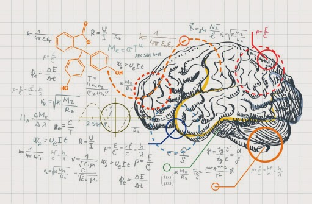

Problema 3:
Se um quadrado tem um lado medindo 5 cm, qual é a sua área?
Solução: Área do quadrado = lado * lado
Área = 5 cm * 5 cm = 25 cm²
Problema 2:
Qual é o valor de x na equação 2x + 5 = 13?
Solução: 2x + 5 = 13
2x = 13 - 5
2x = 8
x = 4
Problema 3:
Se um quadrado tem um lado medindo 5 cm, qual é a sua área?
Solução: Área do quadrado = lado * lado
Área = 5 cm * 5 cm = 25 cm²
Exercicios
Exemplo 1
A soma de três números pares consecutivos é igual a 96. Determine-os.
1º número: x
2º número: x + 2
3º número: x + 4
( x )+(x + 2) + (x + 4) = 96
Resolução
x + x + 2 + x + 4 = 96
3x = 96 – 4 – 2
3x = 96 – 6
3x = 90
x = 90/3
x = 30
1º número: x → 30
2º número: x + 2 → 30 + 2 = 32
3º número: x + 4 → 30 + 4 = 34
Os números procurados são 30, 32 e 34."
Exemplo 2
Exemplo 2
O triplo de um número natural somado a 4 é igual ao quadrado de 5. Calcule-o: Resolução: 3x + 4 = 5² 3x = 25 – 4 3x = 21 x = 21/3 x = 7 O número procurado é igual a 7.
Exemplo 3
A idade de um pai é o quádruplo da idade de seu filho. Daqui a cinco anos, a idade do pai será o triplo da idade do filho. Qual é a idade atual de cada um? Resolução: Atualmente Filho: x Pai: 4x Futuramente Filho: x + 5 Pai: 4x + 5 4x + 5 = 3 * (x + 5) 4x + 5 = 3x + 15 4x – 3x = 15 – 5 x = 10 Pai: 4x → 4 * 10 = 40 O filho tem 10 anos e o pai tem 40.
Exemplo 4
O dobro de um número adicionado ao seu triplo corresponde a 20. Qual é o número? Resolução 2x + 3x = 20 5x = 20 x = 20/5 x = 4 O número corresponde a 4.
Exemplo 5
Em uma chácara existem galinhas e coelhos totalizando 35 animais, os quais somam juntos 100 pés. Determine o número de galinhas e coelhos existentes nessa chácara. Galinhas: g Coelhos: c g + c = 35 Cada galinha possui 2 pés e cada coelho 4, então: 2g + 4c = 100 Sistema de equações Isolando c na 1ª equação: g + c = 35 c = 35 – g Substituindo c na 2ª equação: 2g + 4c = 100 2g + 4 * (35 – g) = 100 2g + 140 – 4g = 100 2g – 4g = 100 – 140 – 2g = – 40 g = 40/2 g = 20 Calculando c c = 35 – g c = 35 – 20 c = 15"